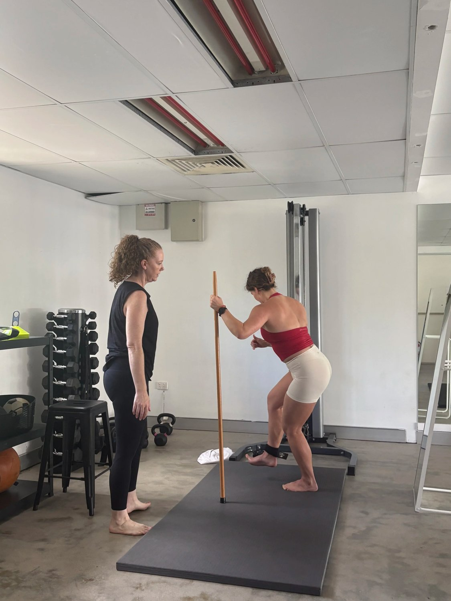
7 Effective Ways to Fix Aching Hips While Sleeping (And Why It Keeps Happening)
Aching hips while sleeping? Learn the real cause—poor force distribution and movement dysfunction—and how to fix it properly.
Read article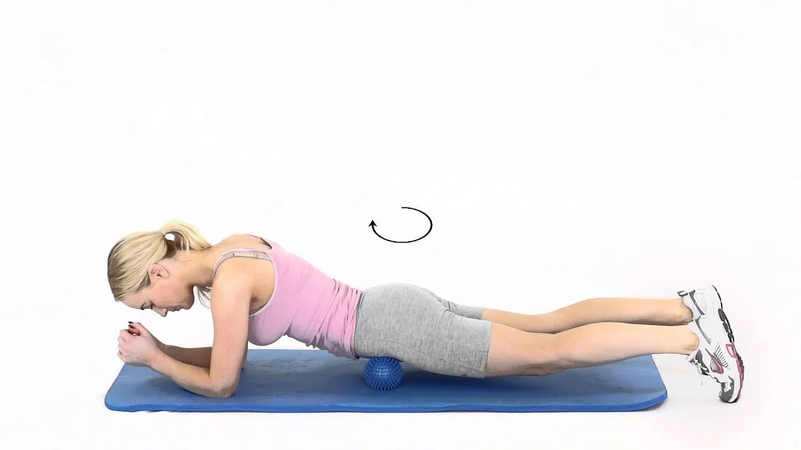
7 Signs You Have Tight Hip Flexors (And Why Stretching Isn’t Fixing Them)
Tight hip flexors that won’t loosen? Discover the real cause—overuse and poor movement patterns—and how to fix it properly.
Read articleUnderstanding Groin Aching Pain: Why It Keeps Coming Back (And What Actually Fixes It)
Struggling with groin aching pain? Learn the real cause—poor load distribution and movement patterns—and how to fix it for lasting relief.
Read article
Why Your Hip Hurts After Running (7 Real Reasons Most People Miss)
Hip hurts after running? Learn the real causes most runners miss—from hip flexor overload to poor stride mechanics—and how to fix it for good.
Read article
10 Effective Remedies for Your Aching Scapula: Why Your Shoulder Blade Pain Isn’t a Shoulder Problem
Discover 10 effective remedies for your aching scapula. Learn why pain under your shoulder blade is often caused by posture and movement patterns—and how to fix it long-term.
Read article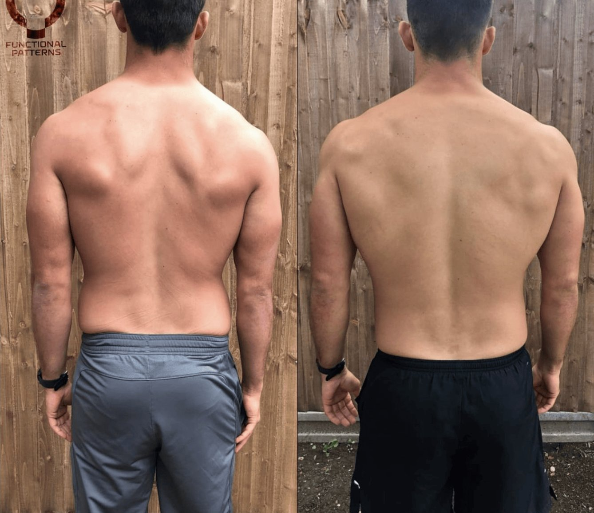
7 Effective Home Remedies for Shoulder Pain Today (And Why Most Don’t Last)
Discover 7 effective home remedies for shoulder pain relief. Learn the real causes of shoulder pain and how to fix it properly—not just temporarily.
Read article
How to Correct Your Posture Permanently (And Why Most Fixes Don’t Last)
Can posture be fixed permanently? Learn why posture keeps reverting and how to correct it properly with movement-based training in Brisbane.
Read article
Understanding Gluteal Tendinopathy: Why Your “Weak Glutes” Aren’t the Real Problem
Discover gluteal tendinopathy—what it is, its causes, symptoms, and effective treatment options. Learn why it’s often a movement problem, not just a glute issue.
Read article
Yoga for Posture: Why It Helps (And Why It Often Doesn’t Last)
Does yoga fix posture? Learn why posture changes don’t last and how to improve posture properly with movement mechanics in Brisbane.
Read articleHow to Fix a Hunchback (Without Wasting Time on Stretching)
Struggling with hunchback posture? Learn why it keeps coming back and how to fix it properly with gait-based training in Brisbane.
Read article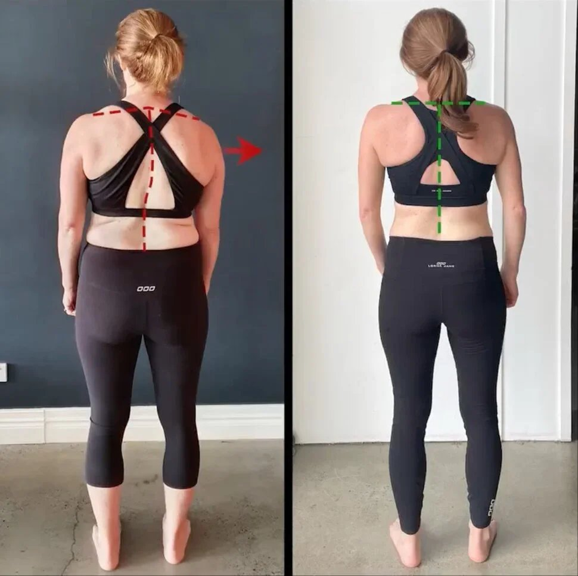
Waking Up Stiff: Why Your Body Aches and Fatigue Won't Go Away
Constantly feeling sore joints and muscles? Functional Patterns Brisbane explains why "rest" won't fix your body aches and how better mechanics can help.
Read article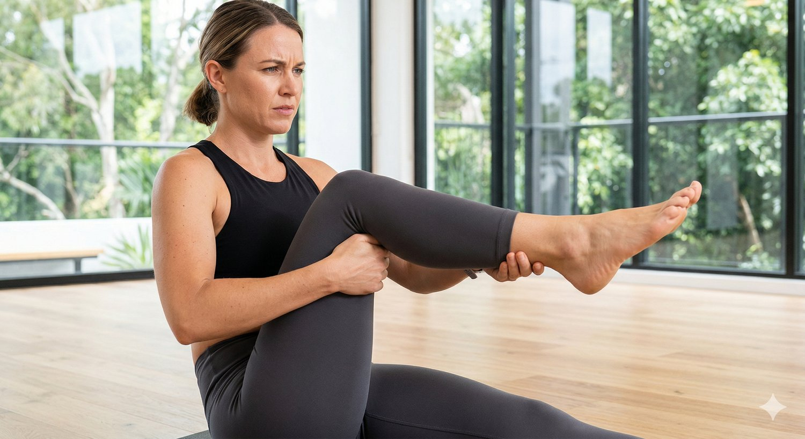
Why Your
Struggling with hypermobile joints or "double-jointed" stiffness in Brisbane? Learn why conventional stretching fails and how biomechanics training at FP BNE builds lasting…
Read article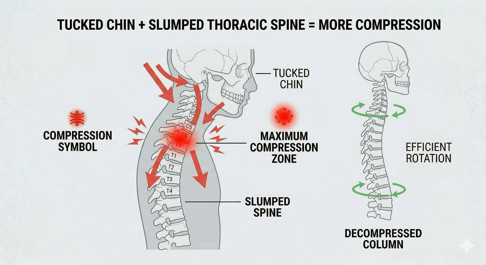
Your
Struggling with forward head carriage or neck pain in Brisbane? Learn why neck exercises fail and how FP BNE fixes posture by addressing the whole body.
Read article
Why Stretching Isn't the Answer for
Stiff or tight? Most stretching for older adults in Brisbane only offers temporary relief. Discover why Functional Patterns Brisbane focuses on biomechanics and gait to fix the…
Read article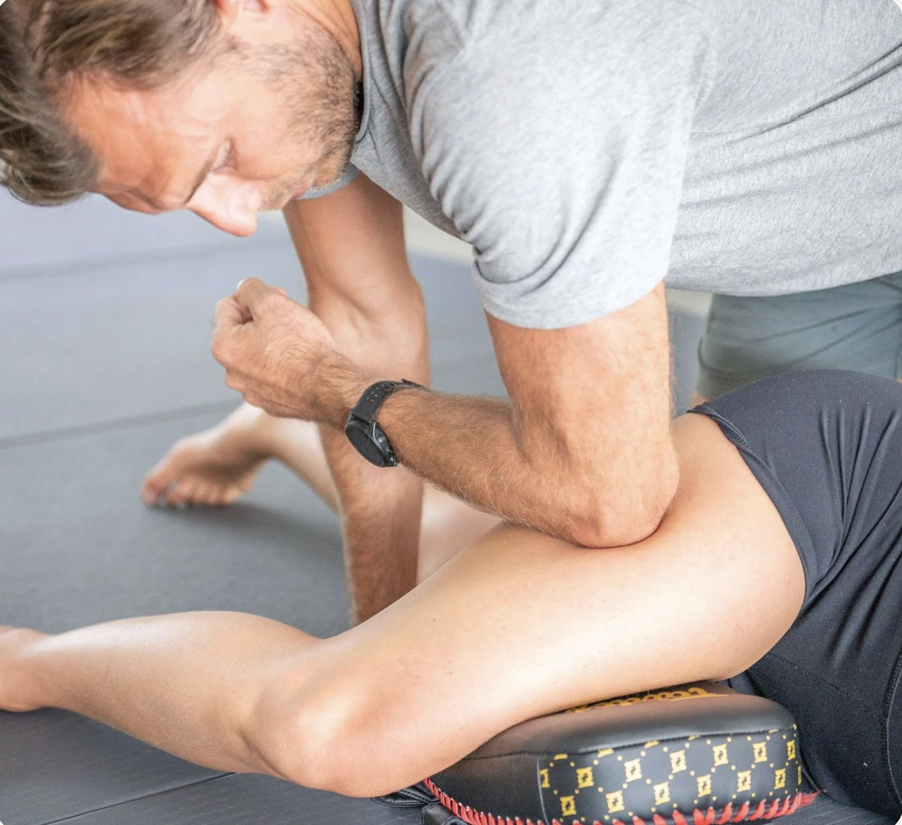
Why Your Legs Feel Heavy, Tired, and Aching (It’s Not Just
Constantly dealing with tired, achy legs? It’s likely a mechanics issue, not just fatigue. Discover how FP Brisbane in Bulimba fixes the cause of leg heaviness through gait and…
Read article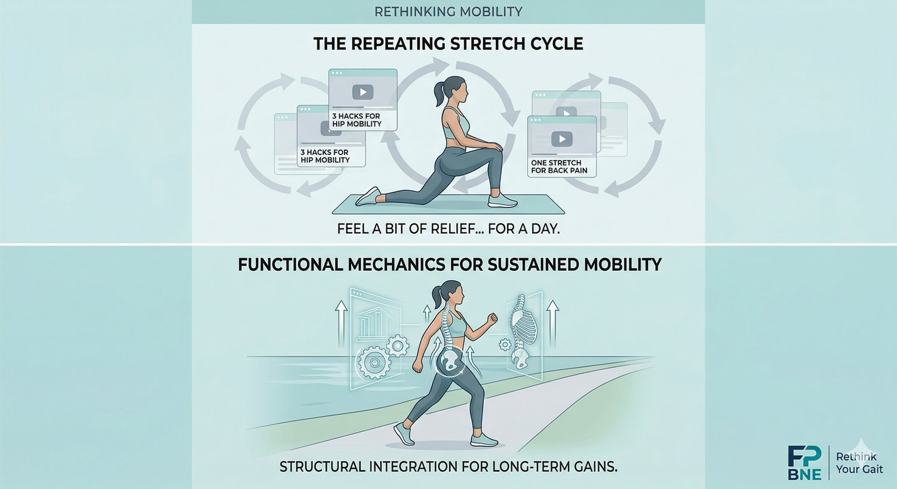
Why Your
Tired of "tight" hips and back pain? Learn why standard mobility drills fail and how biomechanics training at FP Brisbane creates lasting change. Book your assessment in Bulimba.
Read article
Scoliosis Correction Brisbane: Why Intra-Abdominal Pressure Changes Everything
Looking for scoliosis correction in Brisbane? Learn how poor breathing mechanics and intra-abdominal pressure drive spinal curvature—and how to fix it with a structured approach.
Read article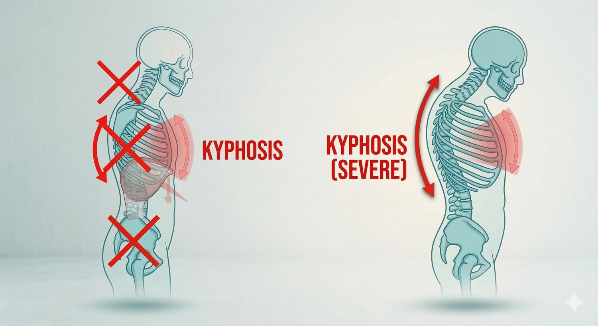
Beyond the
Struggling with neck and upper back posture? Discover why traditional hunchback treatment exercises fail and how to fix kyphosis through ribcage alignment.
Read article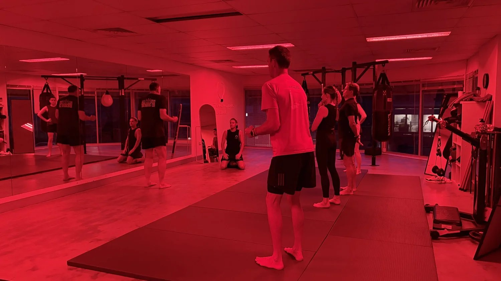
Explosive Power is Built on Mechanics, Not Just Intensity
Looking for explosive leg exercises? Discover why real power is built on biomechanics and rotation, not just jumping. Join Functional Fundamentals in Bulimba.
Read article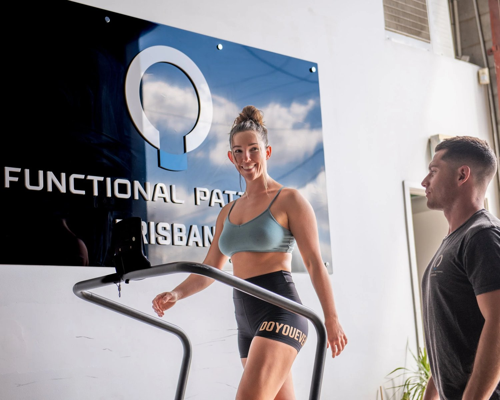
Running with Knee Pain: Why Your
Struggling with knee pain while running? Discover why most runners knee treatments fail and how gait retraining can provide lasting recovery. Book in Bulimba, Brisbane.
Read article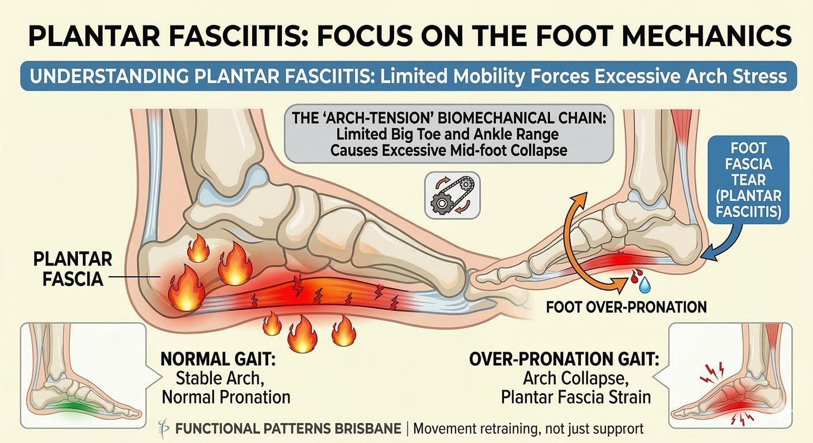
Beyond the Arch: Why Your
Dealing with a foot fascia tear or plantar fascia rupture symptoms? Discover why foot pain is a biomechanics issue, not just a foot issue. Functional Patterns Brisbane.
Read article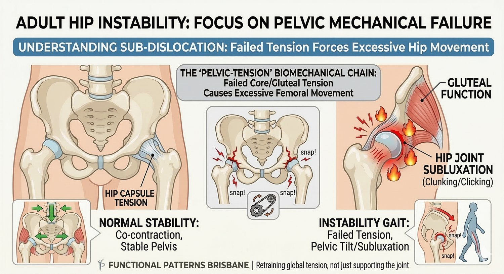
Clicking, Snapping, or Dislocated? Why Your Hip Stability Isn’t Found in a Brace
Worried about hip socket dislocation or snapping hip syndrome? Discover why clicking hips are a movement coordination problem, not an instability problem.
Read article
Why Your Glute Pain Keeps Coming Back: It’s Not Just a “Pulled Muscle”
Tired of "tight glute muscles" that keep coming back? We look beyond the pull or strain to find the biomechanical cause. Discover why your glute pain is a movement problem, not…
Read article
Back Decompression Exercises: What Actually Helps Your Spine
Search “back decompression exercises” and you’ll usually find recommendations like: hanging from a bar stretching the lower back spinal traction yoga decompression…
Read article
How to Remove a Hunchback (And Why Most Advice Gets It Wrong)
Search “how to remove a hunchback” and you’ll see the same recommendations everywhere: Stretch your chest. Strengthen your back. Do posture exercises. Try yoga for hunchback…
Read articleLower Back Ache Left Side: Why It Happens (And What Actually Fixes It)
If you’re dealing with a lower back ache on the left side , you’re not alone. Many people search for answers after noticing: a dull ache in the lower left side of the back …
Read article
Pain at the Top of the Buttocks: Why It Happens and How to Fix It
If you’re experiencing pain at the top of the buttocks , it can be surprisingly frustrating. Many people notice it when: sitting for long periods standing up after…
Read article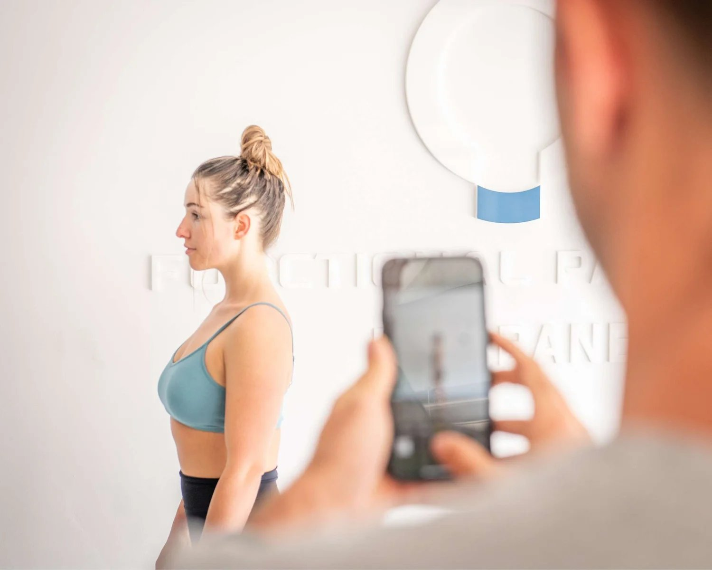
Workouts to Fix Posture (Why Most Posture Workouts Fail)
Search “workouts to fix posture” and you’ll see endless lists of: posture stretches posture correction exercises upper back strengthening workouts posture yoga…
Read article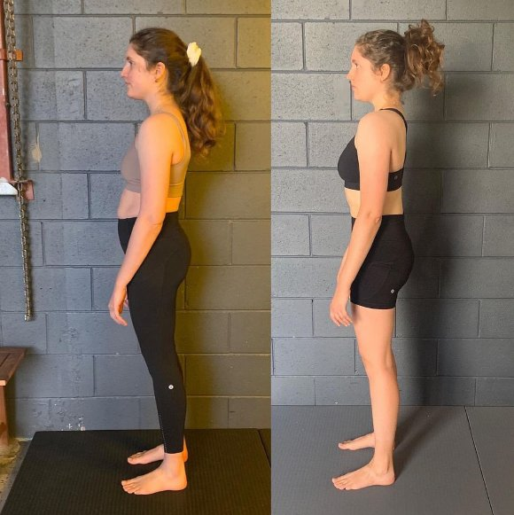
Exercises to Improve Your Posture (And Why Most Posture Exercises Fail)
Search online for exercises to improve your posture and you’ll usually find the same list: Wall angels. Planks. Chest stretches. Rows. The problem is that most people doing…
Read articleBack Decompression Exercises: What Actually Decompresses Your Spine? (Brisbane Guide)
If you’ve been searching: decompression for back how to decompress lower back spinal decompression exercises back decompression at home how to decompress your…
Read article
How to Fix Lower Back and Glute Pain (Brisbane Guide)
If you’re dealing with tight glutes and lower back pain at the same time, you’re not imagining the connection. Most people feel it as: A constant ache through the lower back …
Read article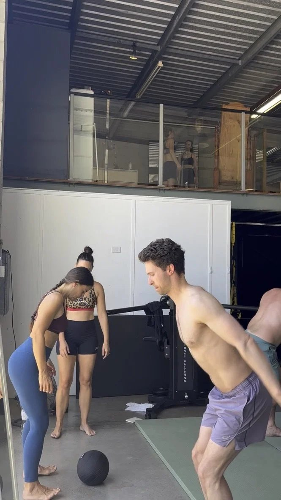
Pain at the Top of the Buttocks? Causes of Buttock Pain (Brisbane Guide)
If you’ve been searching: why does my bum ache painful bottom when sitting sore bottom when sitting sharp pain in buttock when walking pain at the top of the…
Read article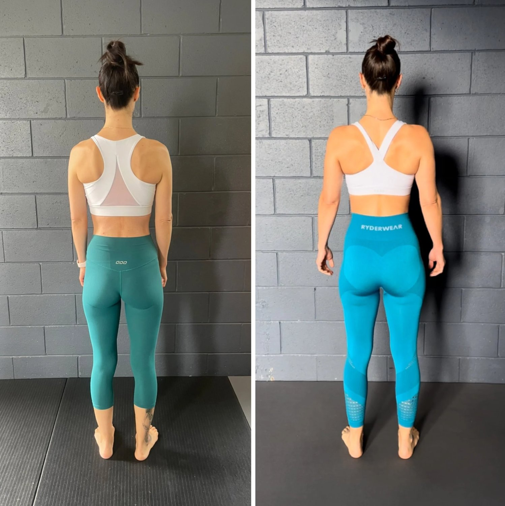
Lower Back Ache Left Side in Brisbane — Causes & When It’s Mechanical
Functional Patterns Brisbane | Left-Sided Back Pain Assessment
Read article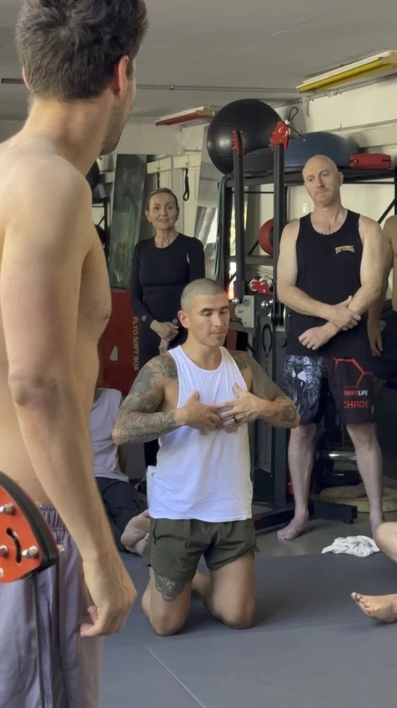
Workouts to Fix Posture in Brisbane — Why Most Don’t Work (And What Actually Does)
Looking for workouts to fix posture in Brisbane? Discover biomechanics-based posture correction at Functional Patterns Brisbane. Improve alignment, reduce pain and move better in…
Read article
Why Tight Hips Keep Coming Back — Even After You Stretch — Functional Patterns Brisbane: The Hidden Truth
Discover why tight hips keep coming back, even after stretching. Learn how movement patterns, coordination, and myofascial release may influence lasting relief with Functional…
Read article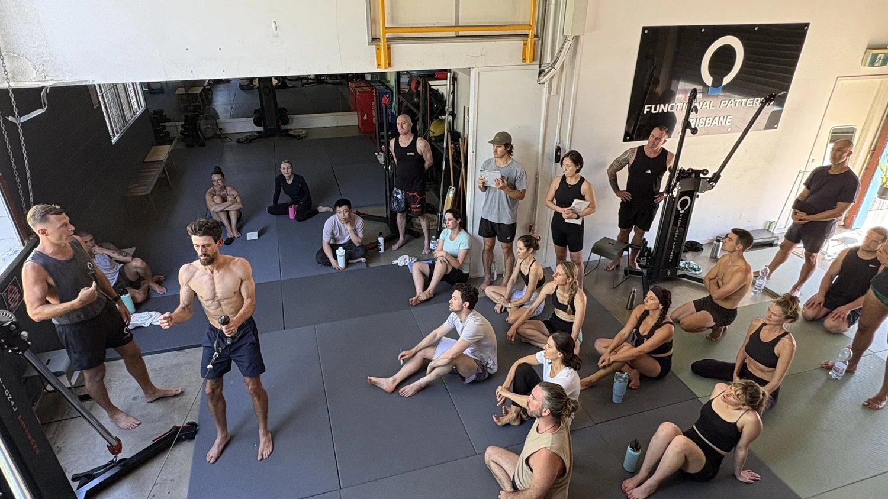
Lower Back Pain: 10 Exercises You Should Avoid (And What To Do Instead) — Functional Patterns Brisbane
Lower back pain won’t improve with random stretches. Discover the 10 exercises to avoid — and what actually fixes chronic lower lumbar pain in Brisbane.
Read article
Understanding Back Pain — Gait, Posture & Movement Insights | FP Brisbane
Back pain isn’t random. Discover how gait, posture and movement mechanics drive chronic back pain — and what actually fixes it in Brisbane.
Read article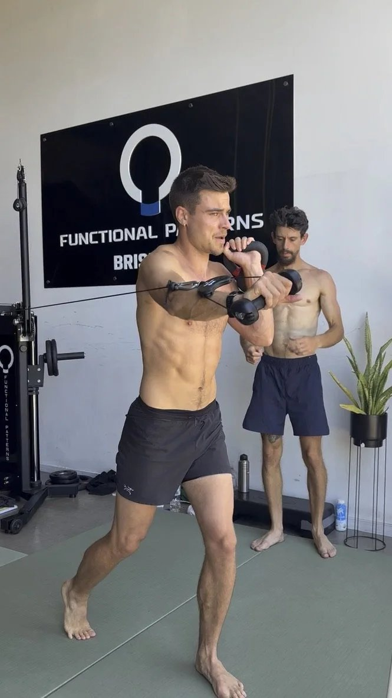
Why Mobility Exercises Aren’t Fixing Your Stiffness
How to improve mobility the right way. Learn why stretching isn’t fixing your ankle, hip or shoulder tightness — and what actually restores long-term mobility.
Read article
Transverse Abdominis vs Six-Pack Abs: Why Most “Core Training” Misses the Point
Confused about the transverse abdominis vs six-pack abs? Learn why isolating the TVA often fails and how Functional Patterns Brisbane approaches real core function.
Read article
How to Heal a Bulging Disc Naturally
Bulging discs aren’t the root cause. Learn how Functional Patterns Brisbane helps heal disc pain naturally by correcting movement, gait, and load.
Read article
How to Heal a Bulging Disc Naturally — Functional Patterns Brisbane
Learn how to heal a bulging disc naturally by correcting movement, gait, and load. Functional Patterns Brisbane offers long-term, non-surgical solutions.
Read article
How to Stop Pain Beneath the Shoulder Blade — Functional Patterns Brisbane
Learn why pain beneath the shoulder blade keeps returning and how functional movement training at Functional Patterns Brisbane can resolve it long term.
Read article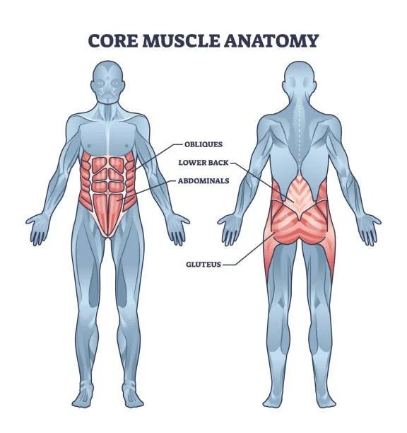
Core Stability vs Core Strength: Why a Strong Core Isn’t Always a Stable One
Core strength and core stability aren’t the same. Learn the difference, why workouts fail, and how functional core stability improves movement.
Read article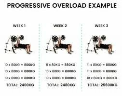
Progressive Overload: Why Adding More Weight Isn’t Always Progress
Progressive overload is often misunderstood. Learn what it really means, why it can cause pain, and how Functional Patterns approaches it differently.
Read article
Gait Meaning Explained: Why the Way You Walk Depends on Core & Mobility
What is gait? Learn the true meaning of gait, how core stability and mobility affect walking, and why poor gait causes pain and compensations.
Read article
Anterior Pelvic Tilt: What It Is, Why It Happens, and How to Actually Fix It
Anterior pelvic tilt is common—but often misunderstood. Learn what causes pelvic tilt, why exercises fail, and how to correct it properly.
Read article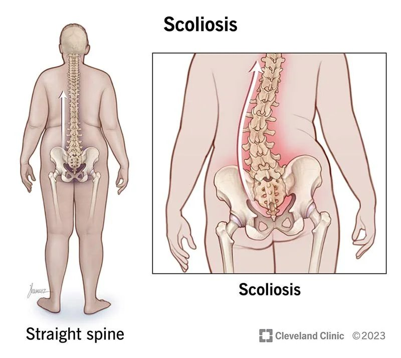
Is Scoliosis Hereditary? What Genetics Can — and Can’t — Explain
Is scoliosis inherited? Learn how genetics influence scoliosis, what actually causes progression, and how targeted training can help improve balance and posture.
Read article
Thoracolumbar Spinal Curvature: What It Means, Why It Happens, and How to Improve Movement
Thoracolumbar spinal curvature affects posture, balance, and movement. Learn what causes it and how targeted training can improve alignment and control.
Read article
Movement-Based Strength Training: How It Differs From Traditional Strength Programs.
Learn how movement-based strength training builds real strength through posture, stability, and coordination. Discover Bells & Bands in Brisbane.
Read article
Preparing Your Body for Pregnancy and Life After Birth: Why the Right Fitness Class Matters
Learn how low-impact strength training supports women before pregnancy and after birth. Build stability, posture, and confidence with Bells & Bands.
Read article
Low Impact Strength Training for Women: Build Strength Without Beating Up Your Body</span>
Learn how low impact strength training helps women build strength, protect joints, and improve posture. Discover Bells & Bands in Brisbane.
Read article
Buffalo Hump vs Dowager’s Hump: What’s the Difference?
Not all neck humps are the same. Learn the difference between a buffalo hump and a dowager’s hump — and when posture is actually the cause.
Read article
Dowager’s Hump Exercises: Why They Rarely Fix the Problem
Searching for dowager’s hump exercises? Learn why exercises alone rarely change a neck hump — and what actually determines long-term posture change.
Read article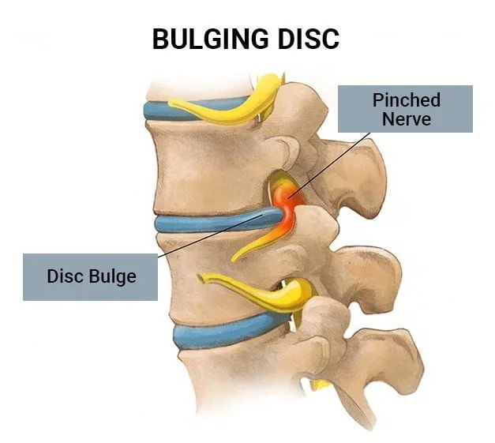
How to Heal a Bulging Disc Naturally — Functional Patterns Brisbane
Learn how to heal a bulging disc naturally with Functional Patterns Brisbane. Discover posture, movement, and holistic strategies that reduce disc pressure and support recovery.
Read article
Uneven Shoulders: Why It’s Rarely a Shoulder Problem
If you’ve noticed your shoulders are uneven — one higher, one lower, or one sitting more forward — you’re not alone. People usually spot it: In photos In the mirror …
Read article
Beyond Physio: A Functional Approach to Ageing Pain-Free
Discover how Functional Patterns helps older adults stay pain-free by retraining posture, gait and movement — not just treating symptoms.
Read article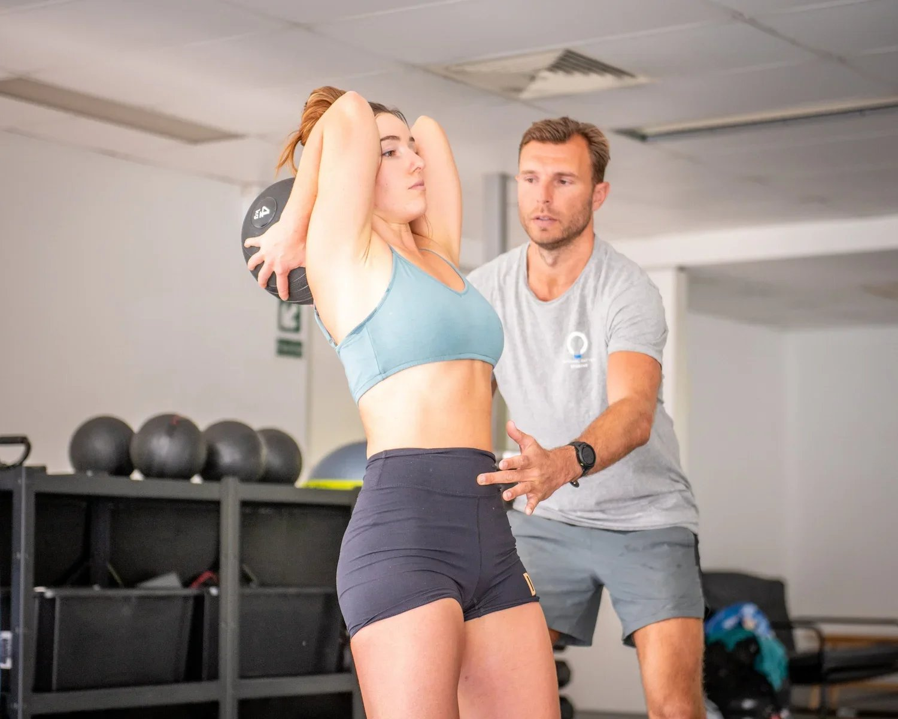
Why Functional Core and Mobility Training Matters More Than You Think
Learn why functional core strength and mobility exercises are essential for posture, pain relief, and real-world movement—not just aesthetics.
Read article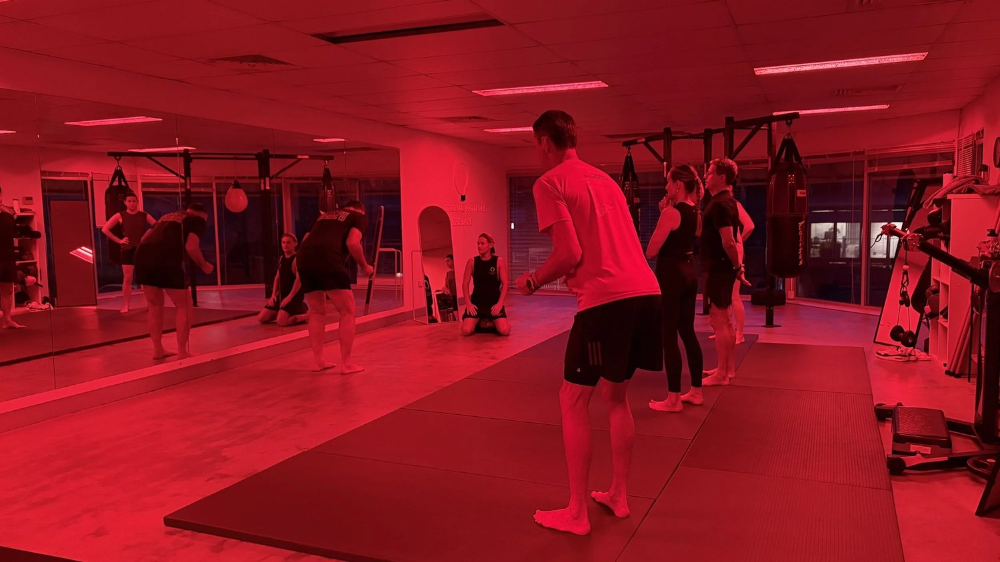
Why Pelvic Imbalance Disrupts Your Core Stability (and How to Fix It Functionally)
Understand how pelvic imbalance affects your gait, posture, and lower back, and how functional training restores true core stability and movement efficiency.
Read article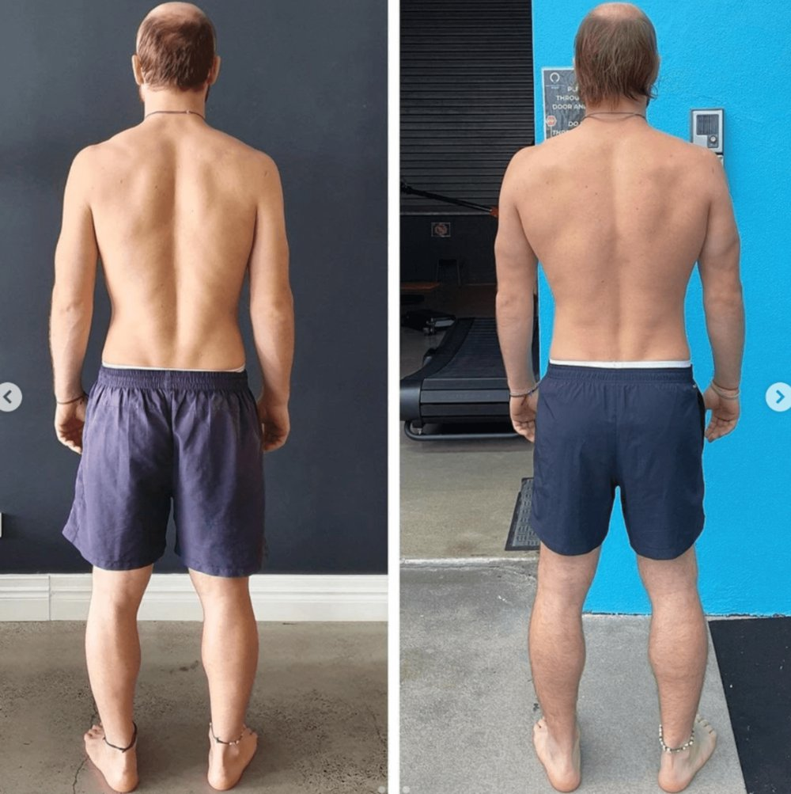
Why Stretching and Strengthening Alone Don’t Fix Pain
Learn why stretching and strengthening alone don’t solve chronic pain and how Functional Patterns creates long-term change through movement re-education.
Read article
Why Tight Hips Keep Coming Back — Even After You Stretch
The Frustration of Tight Hips
Read article
Why Traditional Physio Often Fails Older Adults
Discover why traditional physiotherapy delivers short-term relief for older adults — and how Functional Patterns creates long-term change.
Read article
Why Your Pain Keeps Coming Back (And What to Do Instead)
Find out why pain often returns after physiotherapy and how Functional Patterns fixes the root cause through movement re-education.
Read article
Body Balance Exercises for Posture, Strength & Coordination
Restore posture, symmetry, and movement control with functional body balance exercises that build lasting strength and coordination without strain.
Read article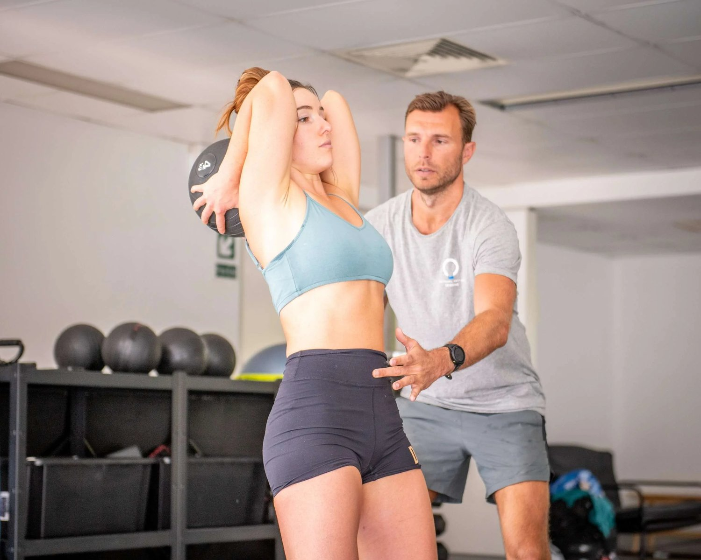
Balance Workouts & the Healthy Spine: What to Avoid
Avoid common balance workout mistakes that harm posture. Learn how to restore coordination, stability, and a healthy spine through functional movement.
Read article
Bad Posture & Back Pain: Why the Problem Isn’t Your Back
Learn how poor posture and sitting habits cause back pain — and how functional movement retraining restores alignment and eliminates chronic tension.
Read article
Mobility Training That Actually Transfers to Real Life
Improve posture, stability, and real-world movement. Discover mobility training at Functional Patterns Brisbane and join the 6-Week Core & Mobility Series.
Read article
Piriformis Syndrome Exercises That Actually Work
Relieve sciatic and glute pain by correcting movement, not masking symptoms. Join Functional Patterns Brisbane’s Core & Mobility Series to move without compensations.
Read article
Scoliosis Workouts: Move Better, Without Compensations
Move without compensations. Learn how Functional Patterns Brisbane’s Core & Mobility Series helps you train safely with scoliosis through functional movement.
Read article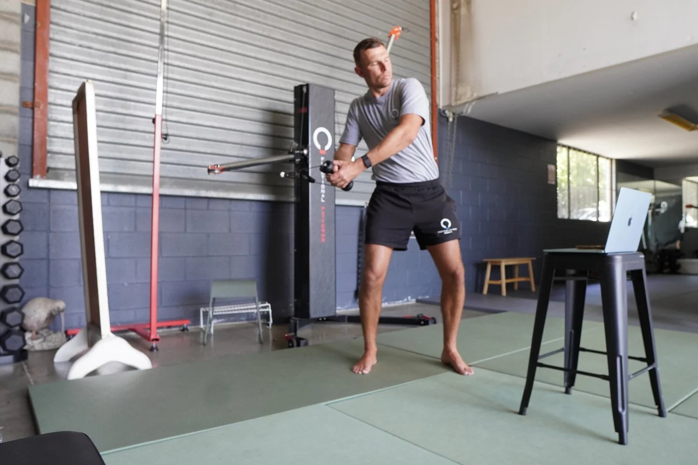
Online Fitness Classes Live: 5 Trends Taking the Fitness World by Storm
Join Functional Patterns Brisbane for live online fitness classes. Correct posture, improve gait, and train smarter with our 5-session online packs.
Read articleLooking for a Scoliosis Physio in Brisbane? Try FP Instead
Searching for scoliosis treatment in Brisbane? Functional Patterns offers a unique, holistic approach to scoliosis that goes beyond physiotherapy. Improve posture and reduce pain…
Read article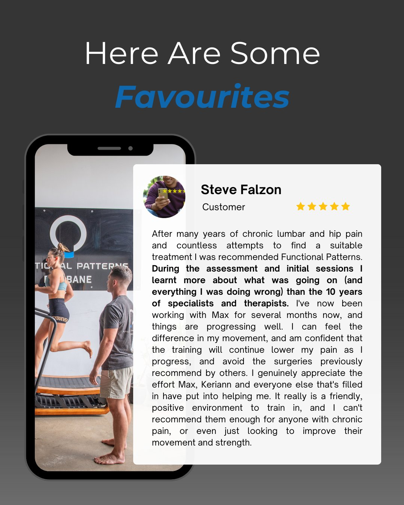
Looking for a Back Specialist in Brisbane? We Get Results!
Struggling with back pain? At Functional Patterns Brisbane, we provide a holistic approach to back pain relief, focusing on movement and posture correction. Stop masking symptoms…
Read articleRunning Gait Analysis in Brisbane: Get to the Root of Your Injuries and Inefficiencies
Unlock the root cause of your movement dysfunctions and injuries with gait analysis at Functional Patterns Brisbane. Our holistic approach improves posture, walking, running, and…
Read article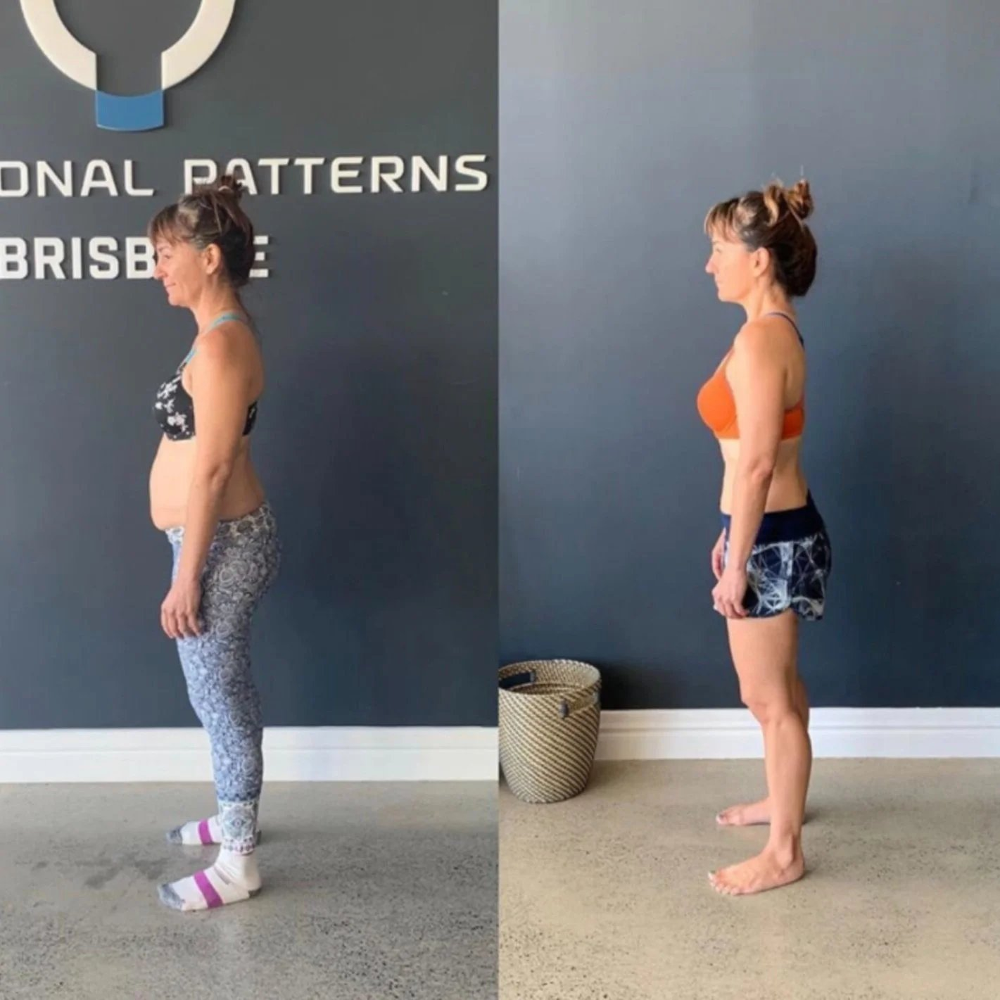
Why Your Rounded Shoulders Keep Coming Back – And What to Do Instead
Tired of exercises for rounded shoulders that don’t work? At Functional Patterns Brisbane, we address the root cause of shoulder posture issues with a holistic, movement-based…
Read article
Why Functional Patterns Is The Best Gym in East Brisbane
Looking for more than just a traditional gym in East Brisbane or Woolloongabba? Functional Patterns Brisbane offers a unique approach focused on biomechanics, posture correction,…
Read article
Understanding Double-Jointed Shoulders and Chronic Pain
Struggling with hypermobile shoulders or chronic pain? Discover how Functional Patterns offers a holistic solution by addressing movement patterns and joint stability, not just…
Read article
Training To Strengthen Ehlers-Danlos Syndrome (EDS) Joints
Discover how Functional Patterns helps individuals with Ehlers-Danlos Syndrome (EDS) build joint stability through tensegrity, integrated movement, and rotation exercises,…
Read article
Why Functional Patterns is the Best Approach to Spinal Decompression
Learn why Functional Patterns Brisbane is the superior long-term solution for spinal decompression. Unlike passive therapies, we address the root cause of spinal compression…
Read articlePhysiotherapy vs. Functional Patterns for Spine Health
Explore the key differences between physiotherapy and Functional Patterns Brisbane for spine health. Learn how FP Brisbane offers long-term, holistic solutions by addressing…
Read article
Why Your Back Hurts From Poor Posture (& How to Fix It)
If your back hurts from bad posture, it’s often a sign of deeper issues. Poor posture strains your spine, core muscles, and soft tissue, leading to back pain, muscle spasms, and…
Read article
A Natural Alternative to Spinal Decompression Surgery
Surgeries such as a decompressive laminectomy and lumbar fusion decompression can offer significant pain relief in severe cases. However, it is not always the only solution. For…
Read article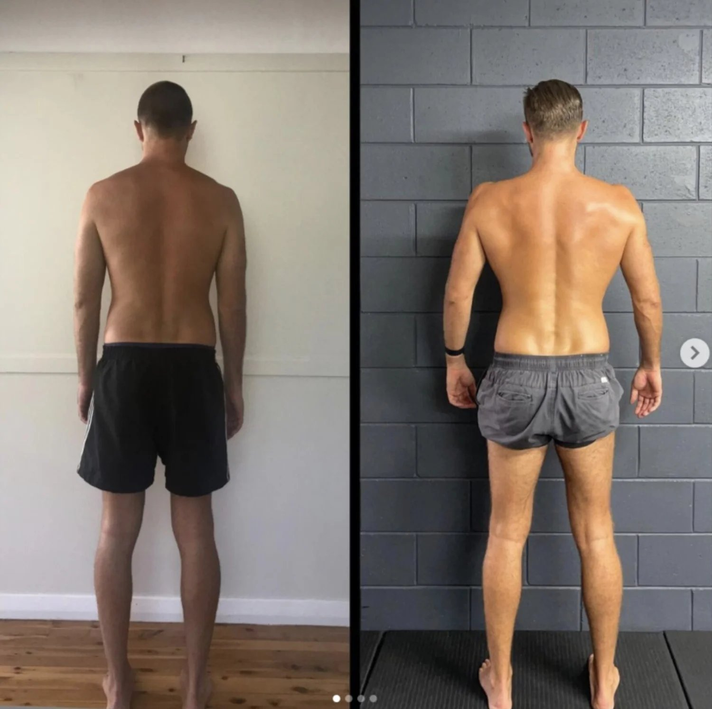
How Poor Posture Affects Your Health + How To Fix It
Poor posture isn’t just about slouching; it has far-reaching effects on your physical and mental health. Improper posture disrupts the balance of your postural muscles, leading…
Read article
How Poor Posture Causes Headaches & How to Fix It For Good
Headaches are a common issue that many people experience, but their root cause often goes unnoticed. A surprising link exists between headaches and posture—specifically, poor…
Read article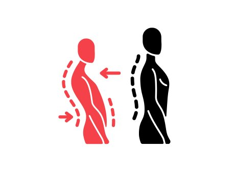
How to Fix Neck Humps: A Biomechanical Approach
We are going to explore how improper spinal alignment, uneven movement patterns, and ineffective core engagement contribute to neck humps. You’ll also discover neck hump…
Read article
Why Functional Movement Is the Best Posture Corrector
When it comes to fixing bad posture, many products promise quick results. These include posture corrector back braces and shoulder braces. While these tools may seem helpful,…
Read article
Why Most Posture Exercises Don’t Work (& What Actually Does)
At Functional Patterns Brisbane, we take a different approach correcting bad posture. We look at how the whole body works together, helping you not just fix your posture but also…
Read article
A Root Cause Solution For TOS (Thoracic Outlet Syndrome)
The real problem with TOS lies in how your body moves and holds itself. Most TOS cases are because of poor posture and dysfunctional movement patterns, not just isolated muscle…
Read article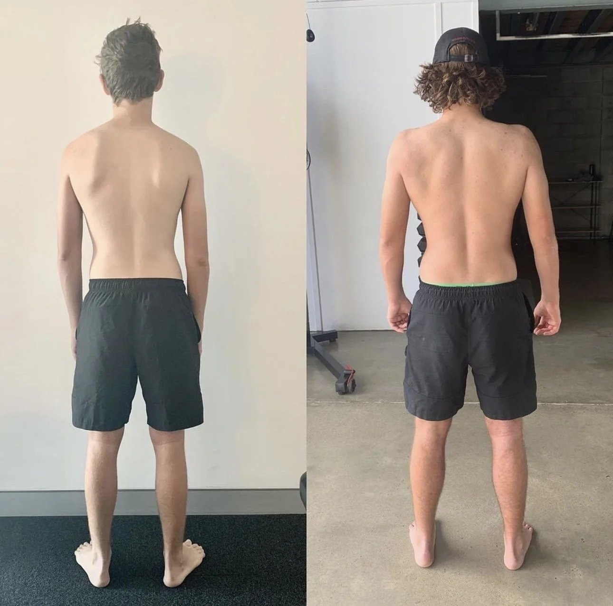
Thoracic Outlet Decompression - Surgery Vs Functional Movement
Thoracic Outlet Syndrome (TOS) occurs when nerves or blood vessels are compressed between the collarbone and the first rib. This can lead to a variety of symptoms, including…
Read article
How to Fix Scapular Winging: Typical Exercises Don't Work
Scapular winging (also known as scapula alata) occurs when the shoulder blades stick out. Scap winging is abnormal as the scapulars should lay flat against the rib cage. The…
Read article
The Key To Achieving Maximum Glute Activation
Modern exercise trends often focus on isolating muscle groups. However, the best gluteus maximus exercises involve the body moving as a cohesive unit. This matters especially in…
Read article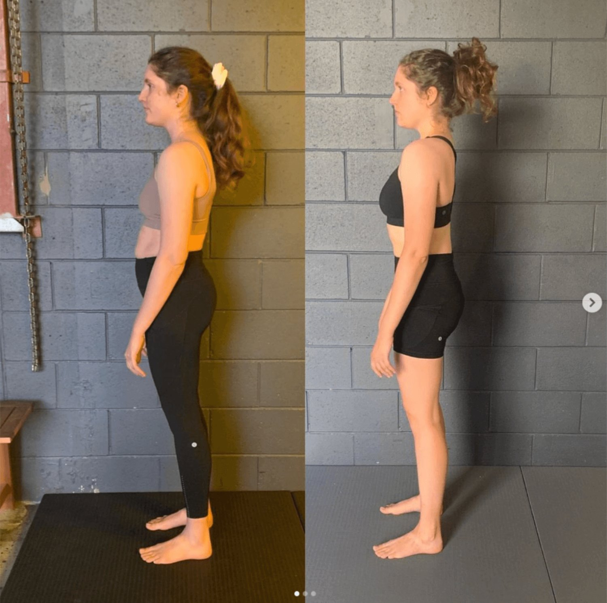
Why A Knee Hyperextension Brace Is Not The Answer
Knee hyperextension is often addressed with quick fixes like braces or orthotics. A knee brace for hyperextended knee may offer temporary relief or support. However, it fails to…
Read article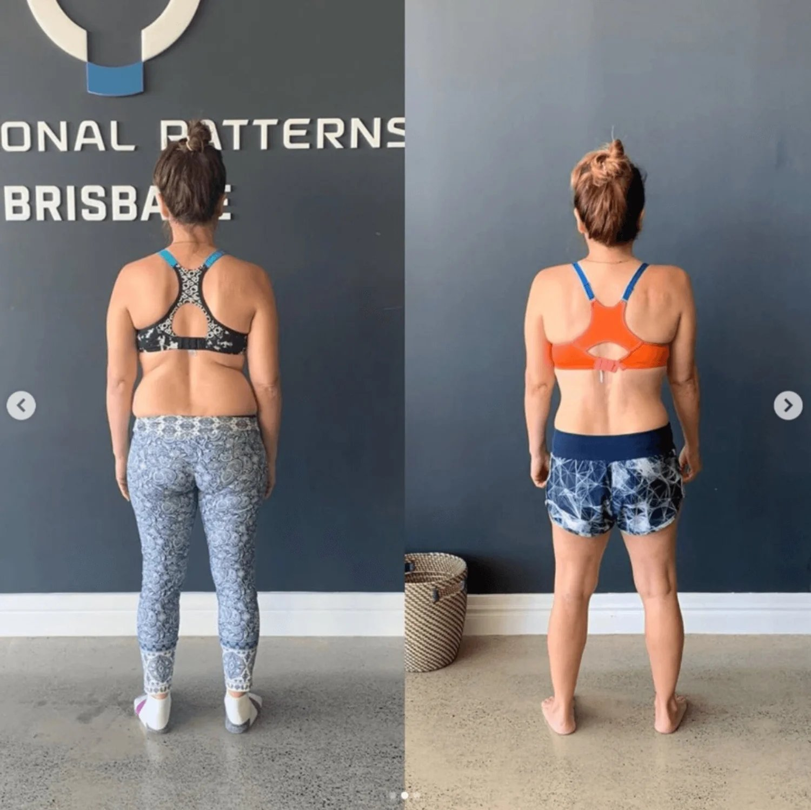
Read this if your lower back hurts when walking or standing
We run a movement-based chronic pain clinic and these are the top 3 reasons we see. Lack of hip rotation while walking Muscle imbalances between the front line and back line …
Read article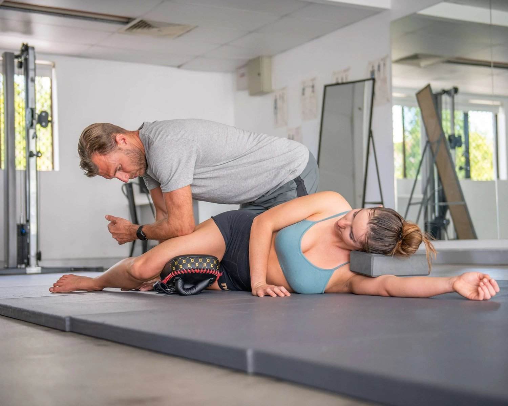
Lower Back Pain And Exercises To Avoid
To managing lower back pain, many people instinctively turn to exercise as a solution. However, while physical activity can help in many cases, certain weight-lifting exercises…
Read article
Posture Workouts That Actually Work. A Complete Guide
In today's world, we hear a lot of advice about improving posture — pulling your shoulders back, doing static stretches, or focusing on isolated exercises. The truth: those…
Read article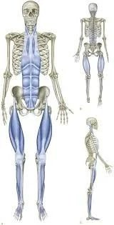
Exercises For Hyperextended Knees: A Guide To Strength
If you're looking to increase the tension and integrity behind your knees, there are a few focus points. Why are your knees hyper-extending in the first place? This is a…
Read article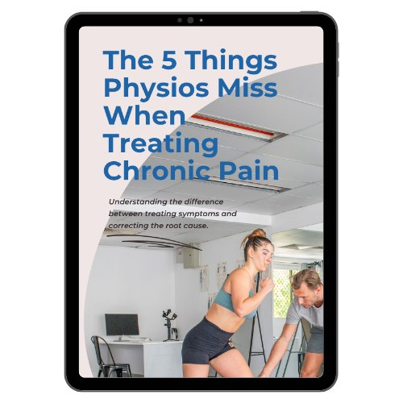
Is Functional Patterns The Same As Scoliosis Physiotherapy?
Functional Patterns offers a different perspective on scoliosis treatment. Most practices solely focus on the spine's curvature or isolated muscle groups. It emphasises the…
Read article
How to Get Rid of a Neck Hump
Do you have a lump or hump at the top of your back or base of your neck? This can be caused by a number of reasons but it can almost always be resolved through correcting…
Read article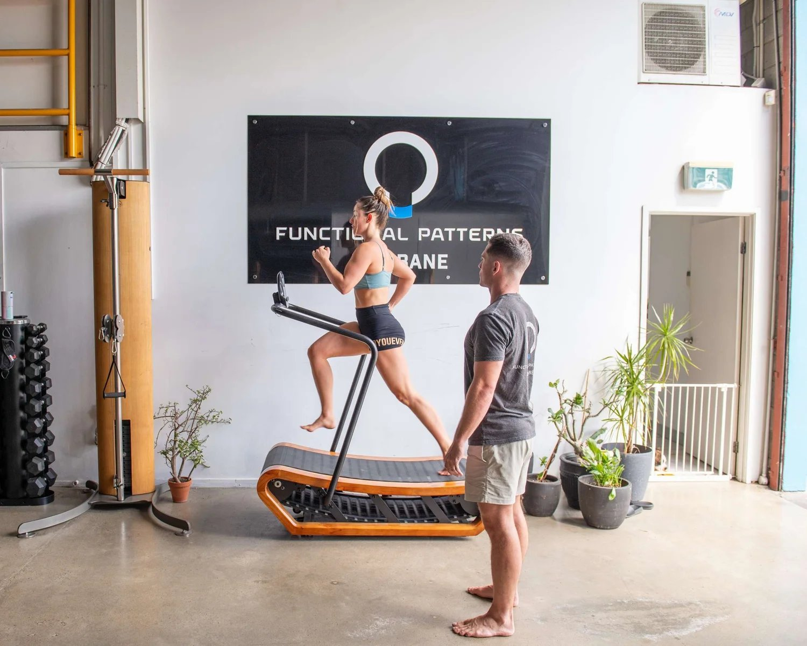
Stopping Hip Pain When Sitting or Lying Down
Many people think adjusting their sitting or lying positions is the solution, but it’s not just about the position—it's about how your body moves overall. Faulty movement…
Read article
How to stop pain beneath shoulder blade
Pain underneath the shoulder blades can be frustrating and debilitating. Unfortunately, there aren’t many longterm soltions for it. Fortunately, Functional Patterns has solved…
Read article
Subscapularis tendinosis, the actual cause and solution
Unlike most practitioners, we look at subscapularis muscle pain and subscapularis tendon tear as symptoms in a bigger picture. We cannot correctly manage shoulder issues without…
Read article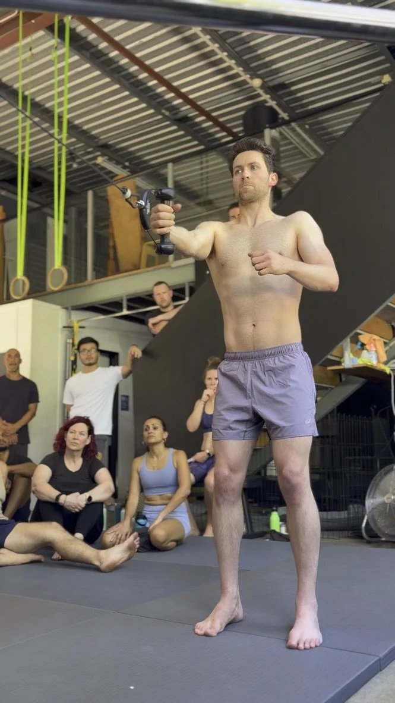
How to Relieve Upper Back Pain Fast Without Stretching.
The mid back is a common place for people to experience pain. This is partially because the movements of the spine greatly affect this region. Physical therapists commonly…
Read article
A Brisbane Neck Specialists Honest Opinion on Stretching.
Do you stretch your neck for pain relief? Wondering why that neck pain always comes back? A Brisbane neck specialists explains why neck stretches can be harmful and what to do…
Read article
Functional Patterns Debunked: Common Misconceptions
Today we are debunking myths associated with the functional training method: Functional Patterns (FP). This is a comprehensive Functional Patterns review that should leave you…
Read article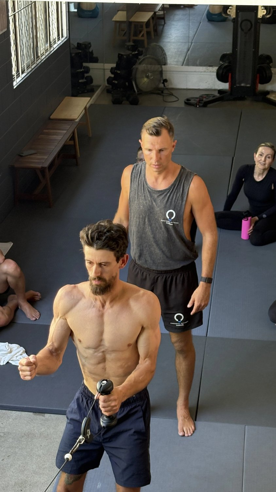
Stop Hip Flexor Soreness After Running in 3 Steps
Do you experience hip flexor soreness after running? Most practitioners will tell you to stretch more. Not us! We find stretching causes more instability which is the root cause…
Read article
Chronic Neck Pain Solutions That Actually Work.
Neck pain is disruptive to sleep, concentration, movement and quality of life. Unfortunately, many people suffer from chronic neck and shoulder pain and cannot find a solution.…
Read article
What are Hypermobile Joints? Hypermobility Exercises to help
Hypermobility can you feel very disconnected to your body and uncoordinated. When we support the nervous and fascial systems of the body, hypermobility improves. We support the…
Read article
The 5 Worst Things For Posture
If you're looking for how to permanently fix posture, you need a root cause solution. Surface level solutions, like a back brace for bad posture, can only do so much.…
Read article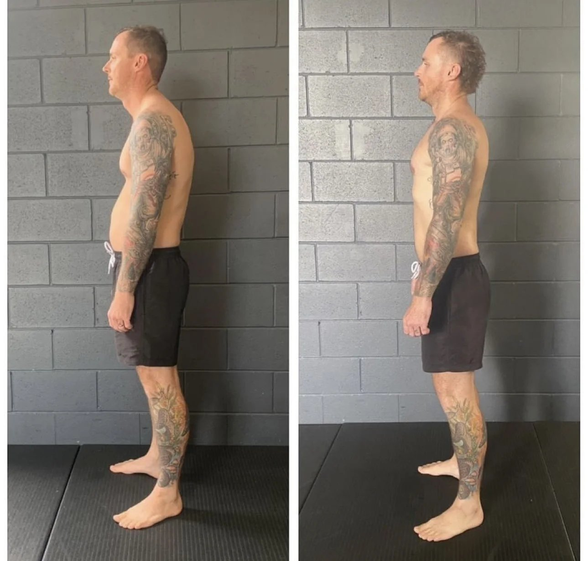
The 5 Best Things For Posture
To understand how to permanently fix posture, you need to understand gait cycle. Gait cycle is a term to describe how you walk, run, stand and move in your day to day life. Its…
Read article
Fibromyalgia Specialist Brisbane - A Different Approach
Fibromyalgia is a debilitating condition that few specialists understand. Even Fibromyalgia Specialists can struggle to provide relief. If you're searching for a "fibromyalgia…
Read article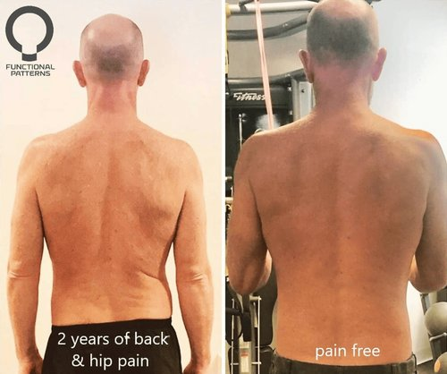
Scoliosis Physiotherapy VS Functional Patterns
Find out which method gets the most results and why. Explore the difference between passive vs movement based scoliosis techniques. See real life case studies of natural…
Read article
How to heal a bulging disc naturally
Bulged and herniated discs are not "wear and tear." They are caused by incorrect rotation and loading of your spine. If you want to decompress your spine and heal your bulged…
Read article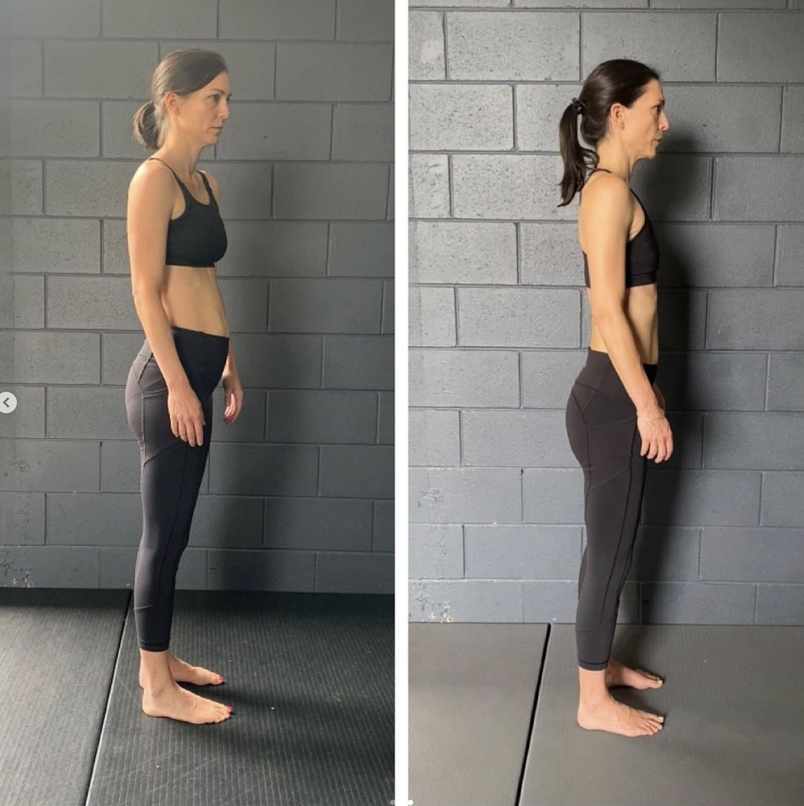
Transform Your Posture, Transform Your Life: A Guide to Conquering Back Pain in Brisbane
Struggling with back pain and poor posture in Brisbane, especially due to office work or a sedentary lifestyle? Discover how traditional posture correctors fall short and learn…
Read article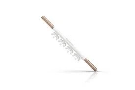
Why i Stopped Fascia Blasting & Fascia Stretching
Discover why Keriann, a seasoned Human Biomechanics Consultant and Trainer, halted fascia blasting despite its popularity. Learn about the limitations of fascial blasting and…
Read article
Why Is My Tensor Fascia Lata (TFL) Always Tight
Are you Tensor Fascia Lata's (TFL) always tight? Do you feel them pulling on your knees and back and causing localised and/or referred pain? We understand that the TFL does not…
Read article
Do Kyphosis Correctors Fix Hunchback Posture?
At first glance, the allure of a hunchback posture corrector is undeniable. It seems to offer a simple solution to the kyphotic position that plagues many individuals, seemingly…
Read article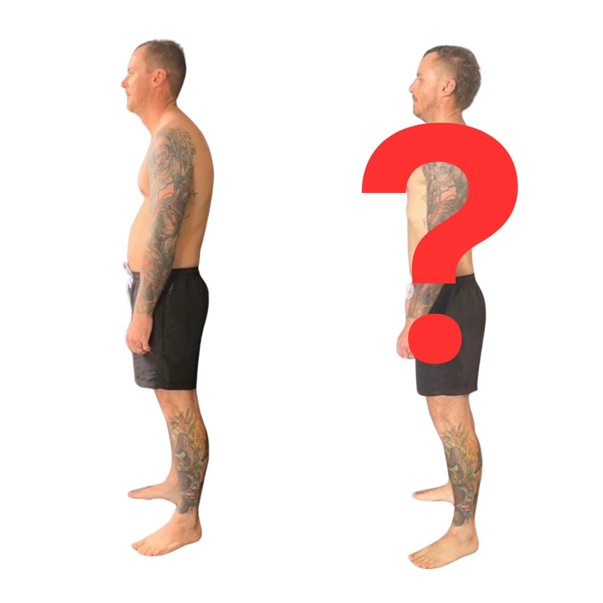
Understanding Poor Posture: A Comprehensive Guide
Struggling with poor posture in Brisbane? Discover the ultimate solution with our posture correction programs, tailored to address the root causes of your discomfort. Located in…
Read article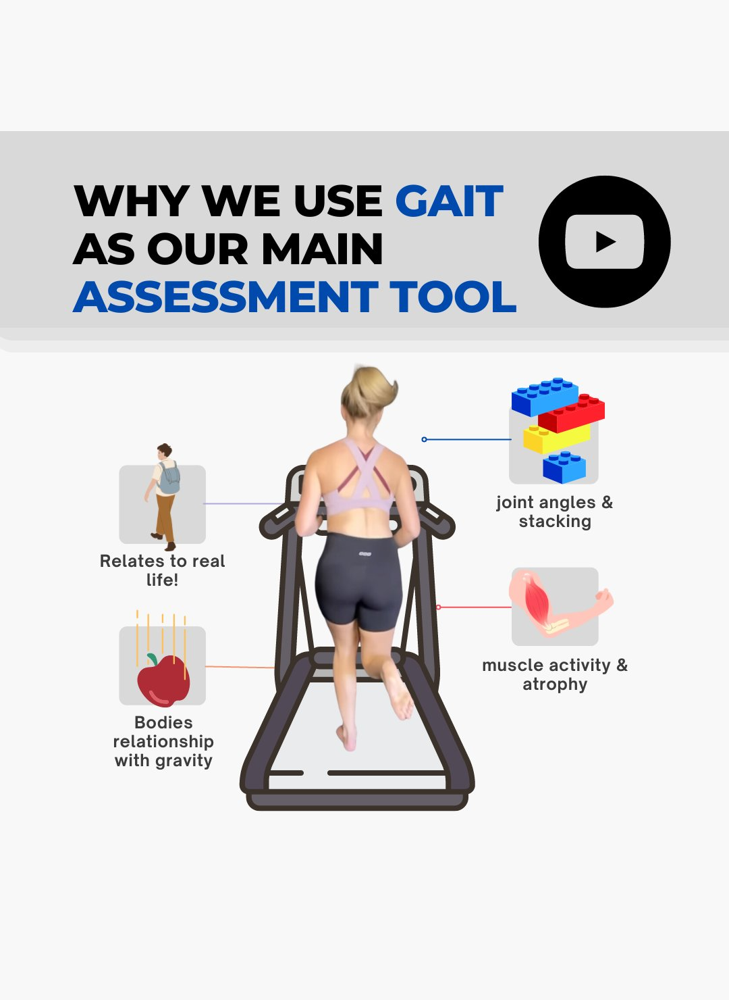
The Best Assessment Tool for Chronic Pain & Posture Correction: A Comprehensive Guide
Struggling with chronic pain and poor posture can feel like a never-ending battle, with countless solutions promising relief yet failing to address the heart of the issue. If…
Read article
How to Fix a Kyphosis and Lordosis Naturally
Struggling with kyphosis or lordosis in Brisbane? Discover life-changing natural therapies that offer more than just temporary relief. At Functional Patterns Brisbane, we're…
Read article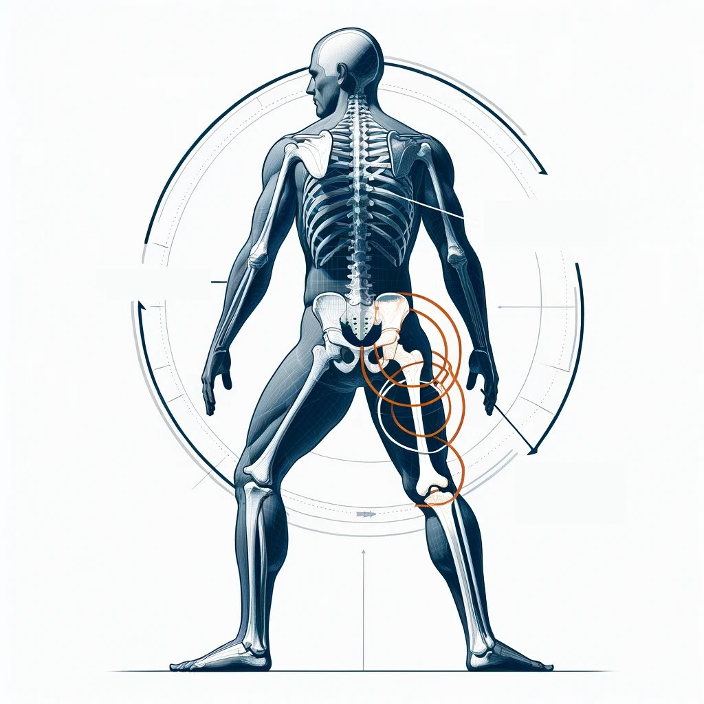
The Connection Between Sciatica & Knee Pain
Explore the intricate connection between sciatica and knee pain in our latest blog post at Functional Patterns Brisbane. Delve into how poor spinal patterns and improper hip…
Read article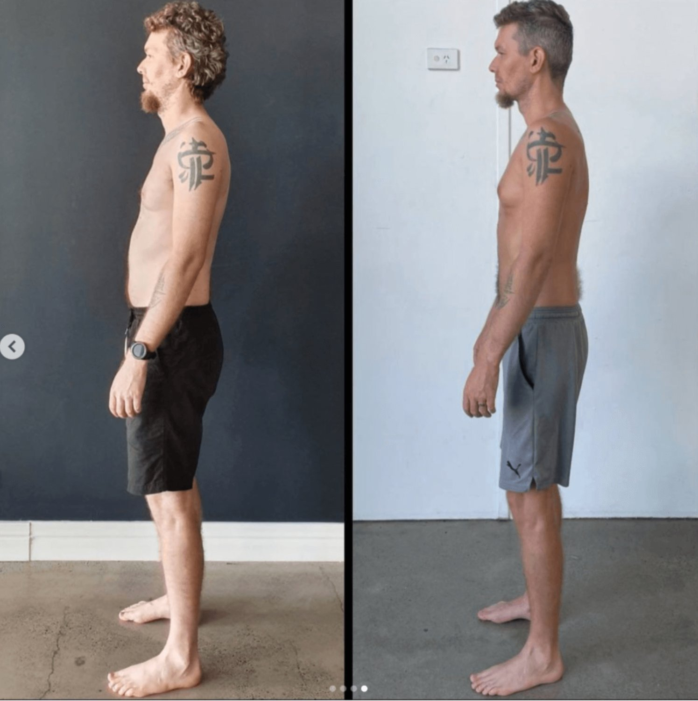
What is Chronic Pain Syndrome
A syndrome typically refers to a set of medical signs and symptoms that are correlated with each other and often associated with a particular disease or disorder, but the exact…
Read articleDoes 'Pulling Your Shoulder Back' Make Posture Better or Worse?
Does pulling your shoulder back improve posture? Research and training thousands of clients with poor posture shows that pulling shoulders back increases poor posture. If you…
Read articleEverything You Need to Know About Kyphosis and How to Fix It
Gravity relentlessly exerts force on our spine, intending to pull it downward. Ideally, our core muscles should be robust enough to resist this constant force, supporting our…
Read articleComprehensive Shoulder Rehab in Brisbane: Your Guide to Rotator Cuff Recovery
The notion that rotator cuff injuries result solely from "overuse" is simplistic. Numerous individuals in Brisbane and beyond heavily rely on their shoulders without issues,…
Read articleElbow Pain: A Permanent Solution in Brisbane
he question then arises: what protocols best serve this purpose? Initially, we recommend curtailing activities aggravating the elbow, reducing stress on the affected musculature.…
Read articleNavigating Life with Ehlers-Danlos Syndrome: The Role of Exercise and Functional Patterns Brisbane
Ehlers-Danlos syndrome (EDS) presents a labyrinth of challenges that significantly impact one's quality of life. Unravelling effective strategies to manage this complex…
Read articleThe Role of Fascia in Chronic Pain: Pathways, Mechanisms, and Functional Patterns
The human body is an intricate web of connective tissue, known as fascia, enveloping muscles, bones, and organs. This critical anatomical feature remains a mystery in many…
Read articleRediscovering Kinesthetic Intelligence: A Lost Dimension of Learning
Explore the critical, often overlooked aspect of kinesthetic intelligence (KQ) in modern education and fitness. Uncover the importance of physical cognition, a neglected…
Read articleWhy Kids & Teenagers Should Get A Gait/Running Analysis
This is why we focus our training around the FP First Four: standing, walking. running & throwing. When you focus on the types of movement we do the most throughout our lives it…
Read articleThe Transverse Abdominis (TVA) vs the Superficial Abs (6 Pack): Why It's Crucial To Know The Difference
Understanding the difference between the Transverse Abdominis (TVA) and the superficial abs (Rectus Abdominis) is crucial for a comprehensive approach to core fitness. While the…
Read articleWhy Your Lower Core Doesn't Work: Addressing Diet & Intra-Abdominal Pressure
A robust and functional core is not just about aesthetics; it's crucial for overall health and well-being. Your core muscles are the foundation of good posture and play a pivotal…
Read articleWhy Your Scapulars Stick Out (Winged Scapulars): The Thoracic Spine
Functional Patterns emphasises the interconnectedness of the body and the importance of addressing biomechanical imbalances to promote optimal scapular positioning. The thoracic…
Read articleHow To Fix Scoliosis: A Functional Approach
Fixing scoliosis requires a holistic approach that takes into account the root cause of why the scoliosis occurred in the first place. Step one is therefore taking gait analysis…
Read articleWhy Your Knees Always Hurt - Hip Rotation, Gait Cycle, and Knee Pain
Do you suffer from knee pain? Have you ever considered it may originate from your hips? Improper hip rotation can result in misalignment of the knees. When the hips don't rotate…
Read articleHow The Way You Move Affects Your Mental Health & Hormones: Exploring Mechanotransduction
Remember, not all movement or exercise is made equal — correct movement is a pathway to hormonal harmony and emotional equilibrium. Incorrect movement patterns achieve quite the…
Read articleUnlocking Balanced Movement: A Holistic Approach to Understanding and Addressing Scoliosis
Discover a holistic approach to scoliosis through biomechanics and Functional Patterns methodology. Address imbalances, optimise movement, and enhance stability for improved…
Read article
Unlocking Relief: The Fascinating Connection Between Fascial Health and Ehlers-Danlos Syndrome
In your search for effective ways to manage hlers-Danlos Syndrome symptoms in Brisbane, exploring the link between fascial health and symptom relief can offer new insights.…
Read articleHow To Fix Scoliosis Naturally Using Intra Abdominal Pressure
Intra-abdominal pressure is a key player in the formation of scoliosis. Learn how it affects the spine and learn how we have used it to naturally straighten scoliosis with so…
Read articleFascia & Chronic Pain: The Cause & The Cure
Find out how fascia can be both the cause and cure for chronic pain. Discover what hydrates fascia and what dries it out. This article combined the latest science with the…
Read articleCan You Fix Scoliosis Naturally With A Scoliosis Specialist?
Can you naturally straighten scoliosis? See incredible scoliosis before and after results and learn the protocol used for each naturally straightened scoliosis. Read real…
Read articleTHE SUPERFICIAL BACK LINE
Read our latest post on the superficial back line, which from our experience is almost always involved in lower back pain, hamstring strains and plantar fascitis
Read articleTHE SUPERFICIAL FRONT LINE
A brief look into one of the most important chains of muscle and fascia in the body. If you have any pain on your body, you need to read this blog
Read articleWE'RE ALL JUST ORANGES
Get a basic understanding of the buzzword that is flying around the health, fitness and rehabilitation community. Understand how isolating anatomy will rarely lead to addressing…
Read article